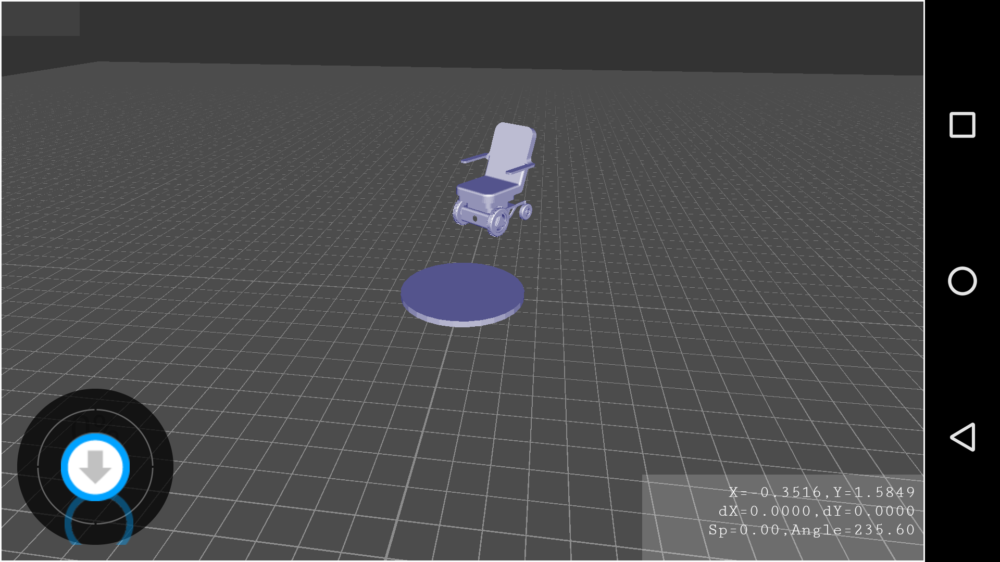

Wheelchair Project
Wheelchair Controlling System is the project from Electrical and Computer Engineering (ECE) Department at Utah State University. I worked on this project during the Summer 2017. Since the project has not been completed and turned to the 2nd phase, I just listed some of the completed work that I have committed.
In this project, my duty is
- Integrate Robot OS and Gazebo for testing
- Deploying 3D wheelchair on Gazebo and implementing a controller to drive it through the defined ROS topics
- Writing the controller on MatLab
- Writing the visual controller app to run on the TX2 computer putting on the real wheelchair
- Designing the image processing algorithm to detect and drive the wheelchair to the charging pad
- Developing the Android controller app with 3D view
System Integration
So I installed Robot OS as the middleware to let software interplays with hardware over the published topics.
Then, I deployed the 3D wheelchair on Gazebo, this model listens to the velocity and webcam topics to obtain locations and pictures.
The Controlling System
I designed and developed the visual controller app that run on Ubuntu (OS that runs on the TX2) using Java AWT. This controller has the following features
- Display the video stream from the embedded camera
- Display the first step of the image processing, the captured pad and the transformation result
- Find relative location of the wheelchair with the pad at the original point
- Show the image processing time and list of current topics
- Allow Settings with all available parameters
- Navigation buttons to manually drive the wheelchair, and function to automatically drive the chair
Image Processing
The wheelchair captures pictures on its movement and process every single picture to detect charging pad and find location.
I used Java AWT for the app, so I recompiled the OpenCV 3.0 library to work on Ubuntu and work with the OpenCV for Java.
Because the bottom process is on OpenCV C library, thus the processing speed on Java is almost the same as on native C language.
The algorithm is as follows
- Use Gaussian blur to remove noise
- Filter colors using HSV to only capture objects with specific colors
- Use Erosion and Dilation to avoid the particles and signify the detect objects
- Detect object edges using Canny Detection functions and draw the object boundarys
- Estimate distance from the camera to the detected object using Focal detection
- Find the direction using Transformation with texture on the pad
For the better performance of pad detection, I also developed a tool to measure the correctness of pad detection using line analysis. This algorithm helps to detect pad even in the low illuminated places.
ROS Management System
I developed the Robot OS Management System to have full access to all the ROS topics, including a real-time data viewer and an info view.
I enabled the simple functions: double click on a topic and a real-time viewer will pop in the left window. It can watch any topics from video streams to primitive types.
Android App
Android is an interesting app that I developed for this project.
The front activity of the app contains the following info: (1) video stream sent from ROS, (2) coordinate system to capture the transitions of location, (3) a joystick for user to control the wheelchair and (4) information of the movement and battery percentage.
The second activity shows the 3D environment including the wheelchair and the pad with the real injected location data. With the 3D model, user will know where the pad is and drive using joystick toward to it, even when they don't see the pad.
I used ROS for Android library to develop the first activity, including the joystick and info window.
I used OpenGL for Android to develop the 3D environment.

The below video shows how the Android app and its 3D feature work